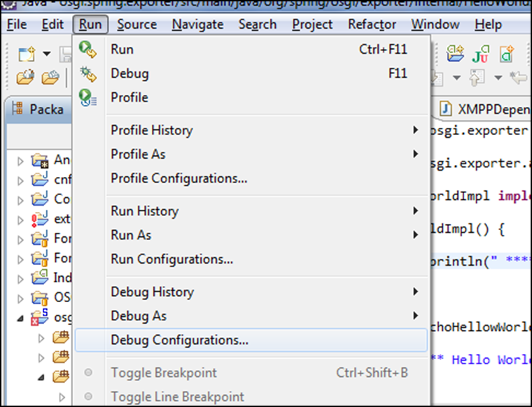
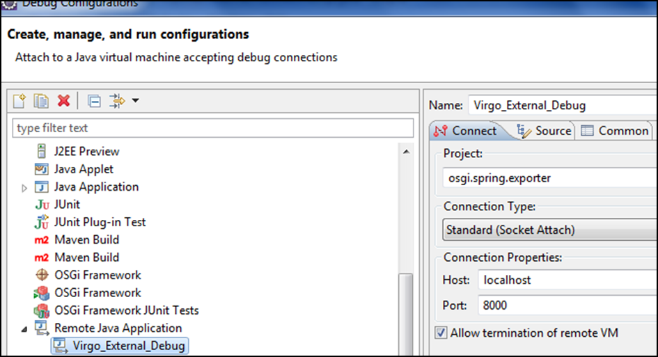
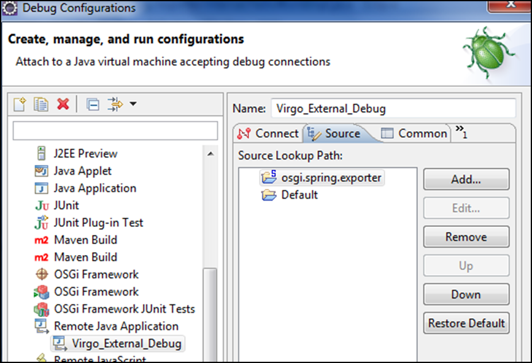

To start Virgo Tomcat Server run the startup.sh (Linux) or startup.bat (Windows) script. For both platforms, the script is located in the VIRGO_HOME/bin directory.
Once Virgo Tomcat Server has started, the console will display a log message similar to the one shown below, along with other status messages:
[2009-11-30 12:12:12.111] Thread-2 <UR0001I> User region ready.
The preceding message indicates that you can start using VTS.
To start Virgo in "clean mode", add the -clean option as a suffix of the script invocation. When you start Virgo Tomcat Server in clean mode, the startup script removes the VIRGO_HOME/work directory (and hence all running applications) as well as all trace, log and dump files. It leaves the VIRGO_HOME/repository and VIRGO_HOME/pickup directories untouched, which means that any applications previously hot deployed will be automatically reinstalled.
Finally, to start Virgo in debug mode, launch the startup script with the following parameters:
startup.[bat|sh] -debug 8001 -suspend
this will start the Virgo debug agent, listening on port 8001, and suspend the Virgo boot procedure until a debugger attaches to the agent.
This feature will be invaluable when debugging a Third Party service that has been deployed into or that interacts with a SOCIETIES node running on Virgo.
Once the server is started, you might access its web-based console using the following url: http://localhost:8080/admin (input "admin" as ID, and "springsource" as password).
With the default configuration, server logs are available at VIRGO_HOME\serviceability\logs
Build the project using maven and deploy the jar to the virgo pickup directory
Start virgo server in debug mode as follows.
VIRGO_HOME\bin\startup.bat -debug 8000Or
VIRGO_HOME\bin\startup.bat -debug -suspend
Note: The -suspend option will suspend Virgo's Virtual Machine until a debugger is attached to the specified port (i.e. it will pause the boot of the Virgo server until a debug session is initiated from Eclipse)
From Eclipse navigate to run → debug configuration:

This will open the Debug Configuration window:

Select "Remote Java Application" icon on left side, Right click and say "New" (give your preferred name of your config - in this case "Virgo_External_Debug"). After clicking on New, Eclipse will create a new Remote Java Application configuration for your selected project.
Provide the host name and port on which your process is listening for debugger connections. Check the "Allow termination of remote VM" check box if you would like to close the remote Java application from within Eclipse.
The debug configuration is ready for use, as long as you remember to start the target application (in our case, Virgo) before connecting the Eclipse remote debugger to it. You can now debug by going to "Debug Configurations" selecting your project in "Remote Java Application" and clicking on "DEBUG".
If you want to perform line-by-line executions of the debugged code, you will have to tell the debugger which locations to search for the matching code.
The following image shows how to define the code lookup folders:

Make sure you have built the code recently and have set breakpoints at the desired locations in the code before starting the debug process, and enjoy your remote Virgo debugging sessions.